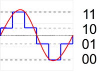

Sygnał analogowy – sygnał, który może przyjmować dowolną wartość z ciągłego przedziału (nieskończonego lub ograniczonego zakresem zmienności). Jego wartości mogą zostać określone w każdej chwili czasu, dzięki funkcji matematycznej opisującej dany sygnał. Przeciwieństwem sygnału analogowego jest sygnał skwantowany, nazywany również dyskretnym (w szczególności: cyfrowym).
kwantyzacja 2-bitowa
kwantyzacja 3-bitowa
kwantyzacja 4-bitowa